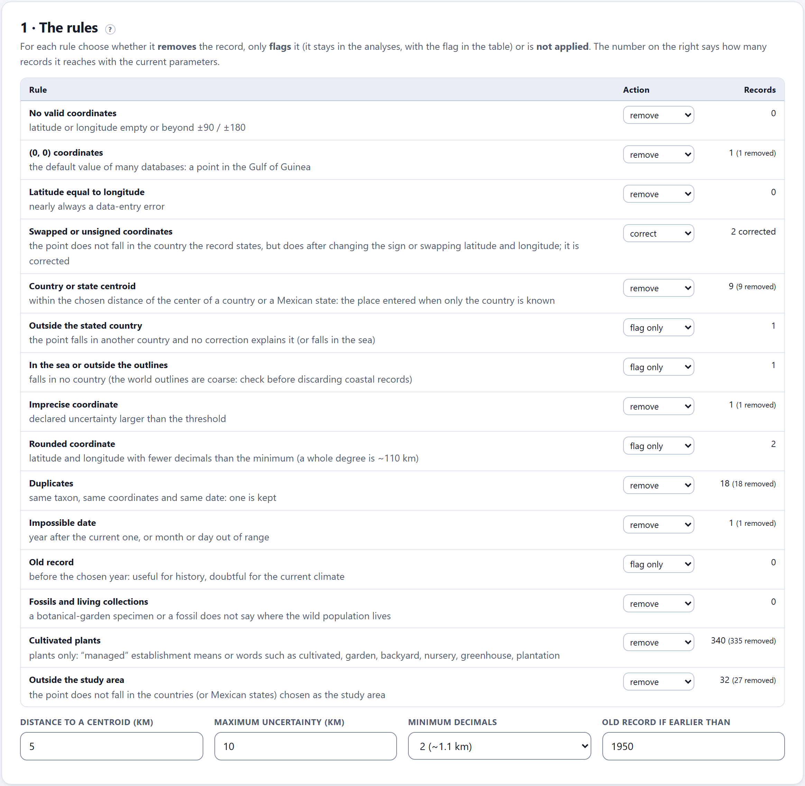
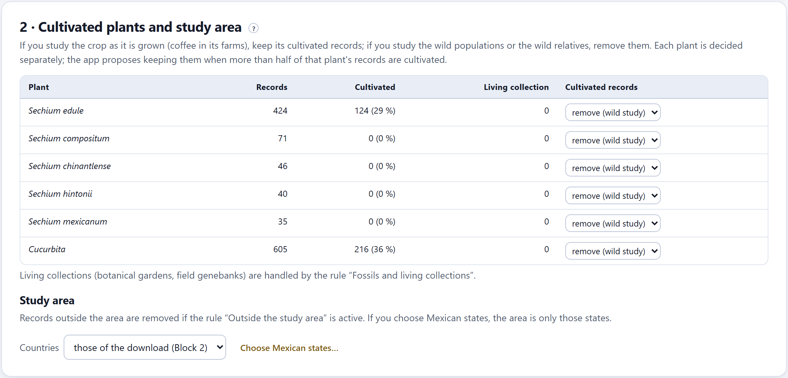
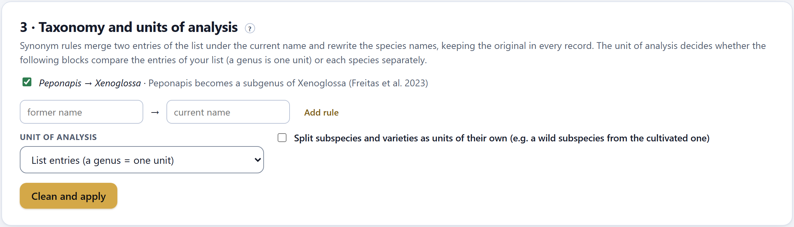
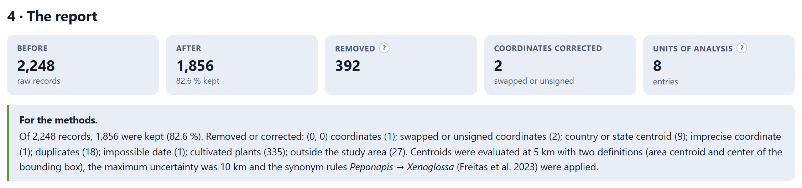
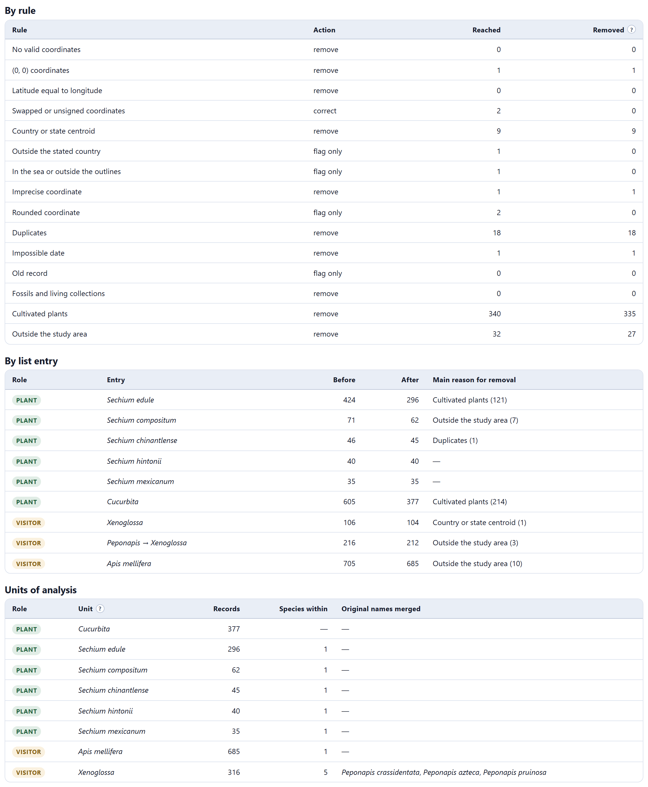
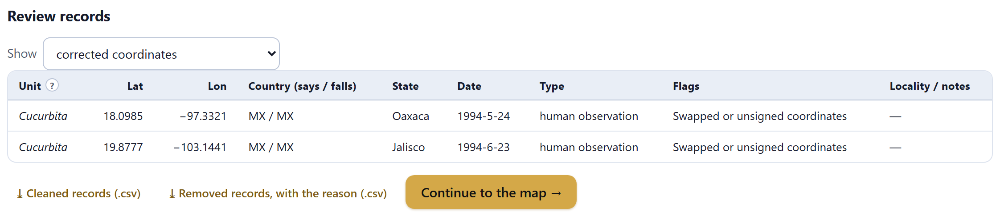

Records arriving from hundreds of collections carry errors that, left uncleaned, turn into results. Here you decide what is removed, what is only flagged and how the units of analysis are named: fifteen quality rules, cultivated plants decided plant by plant, the study area, synonyms and the unit. The report comes out written for the methods section.
A single record at the geographic center of Mexico —the place written down when only the country is known— can create a co-occurrence between two species that have never been seen together. A backyard chayote in Mexico City stretches the climatic niche of the species toward places where it never lived in the wild. And a bee recorded as Peponapis in one collection and as Xenoglossa in another splits into two units that do not recognize each other. Cleaning is not a formality: it is the first scientific decision of the study.
The app applies the checks on which the record-cleaning literature agrees (Chapman 2005; Zizka et al. 2020) and keeps every decision in view, with its count. Nothing is applied until you press Clean and apply, and everything can be redone: the raw records of Block 2 are not touched.
For each rule you choose whether it removes the record, only flags it (it stays in the analyses, with the flag in the table) or is not applied. The column on the right says how many records it reaches with the current parameters, and how many it would remove.

| Rule | What it detects | Default | Practice |
|---|---|---|---|
| No valid coordinates | Latitude or longitude empty or beyond ±90 / ±180. | remove | 0 |
| (0, 0) coordinates | The default value of many databases: a point in the Gulf of Guinea. | remove | 1 |
| Latitude equal to longitude | Nearly always a data-entry error. | remove | 0 |
| Swapped or unsigned coordinates | The point does not fall in the country the record states, but does after changing the sign or swapping latitude and longitude. This rule does not remove: it corrects. | correct | 2 |
| Country or state centroid | Within the chosen distance of the center of a country or of a Mexican state, with two definitions of “center” (Section 3.2.1). | remove | 9 |
| Outside the stated country | The point falls in another country and no correction explains it, or it falls in the sea. | flag only | 1 |
| In the sea or outside the outlines | It falls in no country. The world outlines are coarse: check before removing coastal records. | flag only | 1 |
| Imprecise coordinate | Declared uncertainty larger than the threshold (10 km). | remove | 1 |
| Rounded coordinate | Latitude and longitude with fewer decimals than the minimum (2, about 1.1 km). A whole degree is ~110 km. | flag only | 2 |
| Duplicates | Same taxon, same coordinates and same date: one is kept. | remove | 18 |
| Impossible date | Year after the current one, or month or day out of range. | remove | 1 |
| Old record | Before the chosen year (1950): useful for history, doubtful for the current climate. | flag only | 0 |
| Fossils and living collections | A botanical-garden specimen or a fossil does not say where the wild population lives. | remove | 0 |
| Cultivated plants | Plants only: “managed” establishment means, or words such as cultivated, garden, backyard, nursery, greenhouse, plantation, milpa, coffee farm (Section 3.3). | remove | 340 |
| Outside the study area | The point does not fall in the countries —or Mexican states— chosen as the area (Section 3.3). | remove | 32 |
The seven errors planted in the practice study all come out: the (0, 0), the swapped coordinate and the unsigned longitude (both corrected), the center of Mexico, the rounded coordinate, the year 2031 and the record with 25 km of uncertainty, in addition to the 18 duplicates. The centroid rule reaches nine records and not only the planted one: with points drawn at random around invented centers, eight fell within 5 km of the center of some state. The same happens with real data, and that is why the distance is a parameter.
The place written down when only the country or the state is known is not always the same. Some databases use the area centroid of the polygon; others, the center of the bounding box. The “center of Mexico” that circulates as a placeholder, at 23.6345° N and 102.5528° W, is the second one, and it lies tens of kilometers from the first. The app computes both for every country in the world and for each of the 32 Mexican states from its own outlines, and the rule reaches a record if it falls near either of them.
| If the error means the point does not represent where the organism was (0, 0; centroid; fossil; living collection; impossible date) | then remove it: leaving it shifts the maps, the cells and the niche. |
| If the record is doubtful but may be correct (rounded, old, coastal) | then flag it and review it in the table of Section 3.6 before deciding. If your analysis cell is 0.25° or larger, a coordinate with two decimals changes nothing. |
| If one rule reaches many records of a single entry | then look at the table “By list entry”: it may be a collection with a systematic problem, and it is worth knowing before removing it altogether. |
Most records of a crop are of planted individuals, whose distribution reflects agriculture and not the natural niche. What to do with them depends on the question: if you study the crop as it is grown (coffee in its farms), keep its cultivated records; if you study the wild populations or the wild relatives, remove them. That is why each plant is decided separately, and the app proposes keeping them when more than half of that plant’s records are cultivated.

A record is considered cultivated if its establishment means is “managed”, “cultivated”, “introduced” or “planted”, or if its locality or its notes say cultivated, sown, planted, orchard, vegetable garden, garden, backyard, nursery, greenhouse, market, plot, fruit orchard, milpa, coffee farm, plantation, ornamental or escaped from cultivation, in Spanish or English. The column Living collection counts separately the specimens from botanical gardens and field genebanks, which are handled by the rule “Fossils and living collections”.
The rule only sees what the record says. A garden chayote recorded without notes passes as wild. With widely grown crops, check on the map of Block 4 the points in cities and in farming areas, and consider narrowing the study area to the known natural distribution.
The study area. Records outside the area are removed if the rule “Outside the study area” is active. The Countries selector offers those of the download (Block 2) —the usual choice— or all (no area). Choose Mexican states… opens the list of the 32 states: if you choose some, the area is only those. In the practice study the area is Mexico, and the rule removes 27 records, almost all from the Guatemalan side of the southern border.

Synonym rules bring two entries of the list together under the current name and rewrite the species names —Peponapis crassidentata becomes Xenoglossa crassidentata—, keeping the original name in every record. The app comes with the rules it knows and proposes them when both entries are on the list; the one for the squash bees follows Freitas et al. (2023), who place Peponapis as a subgenus of Xenoglossa. Each rule is turned on or off with its checkbox, and you can add others by typing the former name and the current name and pressing Add rule.
| Unit of analysis | What the following blocks compare |
|---|---|
| List entries (a genus = one unit) | Each entry is a unit: Cucurbita gathers all its species and Xenoglossa, after the synonym, gathers five. It is the right choice when the question is about a functional group (the squash bees) or when the species have few records. |
| Species (each species apart) | Each species is a unit, even if the list has a genus. It is the right choice when the question is about particular species and each one has enough records. |
| Split subspecies and varieties as units of their own (e.g. a wild subspecies from the cultivated one) | With species as the unit, it also splits subspecies and varieties (for example, a wild subspecies from the cultivated one). |
When you are done, Clean and apply runs the rules, applies the synonyms, assigns the units and opens the report.

The box For the methods is a paragraph ready to copy. It says how many records were kept, which rules removed or corrected how many, at what distance and with which two definitions the centroids were evaluated, what maximum uncertainty was used and which synonym rules were applied, with their reference. The report of Block 10 takes it up again with the citations of the cleaning methods.
“Of 2,248 records, 1,856 were kept (82.6 %). Removed or corrected: (0, 0) coordinates (1); swapped or unsigned coordinates (2); country or state centroid (9); imprecise coordinate (1); duplicates (18); impossible date (1); cultivated plants (335); outside the study area (27). Centroids were evaluated at 5 km with two definitions (area centroid and center of the bounding box), the maximum uncertainty was 10 km and the synonym rules Peponapis → Xenoglossa (Freitas et al. 2023) were applied.”

| Table | What it is for |
|---|---|
| By rule | The action of each rule, how many records it reached and how many it removed. A rule can reach more than it removes because another rule had already removed them: Cultivated plants reached 340 and removed 335. |
| By list entry | The records before and after and the main reason for removal. In the practice study, chayote goes from 424 to 296 (mostly cultivated, 121) and Cucurbita from 605 to 377 (cultivated, 214). The Peponapis row says “Peponapis → Xenoglossa”. |
| Units of analysis | The units that Blocks 4 to 8 will see, with their cleaned records, how many species they gather and which original names were merged into each one. |
| If cleaning keeps more than 80% of the records | then it is the usual result with well-filtered GBIF data; report it and move on. |
| If it keeps between 50 and 80% | then look at which rule removes the most: if it is cultivated plants, it is a decision of the question, not a quality problem. |
| If it keeps less than half, or a unit is left with fewer than 20 records | then review the parameters (distance to the centroid, uncertainty, area) and consider bringing species together in their genus. |
These are guides: a rare species with 15 good records is worth more than a common one with 1,500 doubtful ones.
The Show selector filters the records table: all the removed ones, the corrected coordinates or those of a given rule, with their count. Each row gives the unit, the latitude and longitude (already corrected), the country the record states and the country where it falls, the Mexican state, the date, the record type, the flags of the rules —with ✕ if it was removed— and the locality or the notes.

⤓ Cleaned records (.csv) (clean_records.csv) downloads those that enter the analysis, with their unit, the original and the harmonized name, and the Mexican state; ⤓ Removed records, with the reason (.csv) (removed_records.csv) downloads the rest with the rule that removed them. Both are the supplementary material a reviewer expects to see.
| Message | What it means and what to do |
|---|---|
| Records are needed first | Block 2 is empty. Download from GBIF, upload your records or load the practice ones. |
| A rule reaches many coastal records (“In the sea or outside the outlines”) | The world outlines are coarse along the coasts. Leave it on flag only and check those points on the map of Block 4 before removing them. |
| A unit is left with very few records | The following blocks will analyze it anyway, but their tests will have little power and some will leave it “unclassified”. Bring it together in its genus or widen the area. |
| I changed the data of Block 2 after cleaning | There is no need to come back here: the cleaning is redone by itself, with the same rules, as soon as a block needs it. If what you change is a rule, a synonym or the unit, press Clean and apply. |